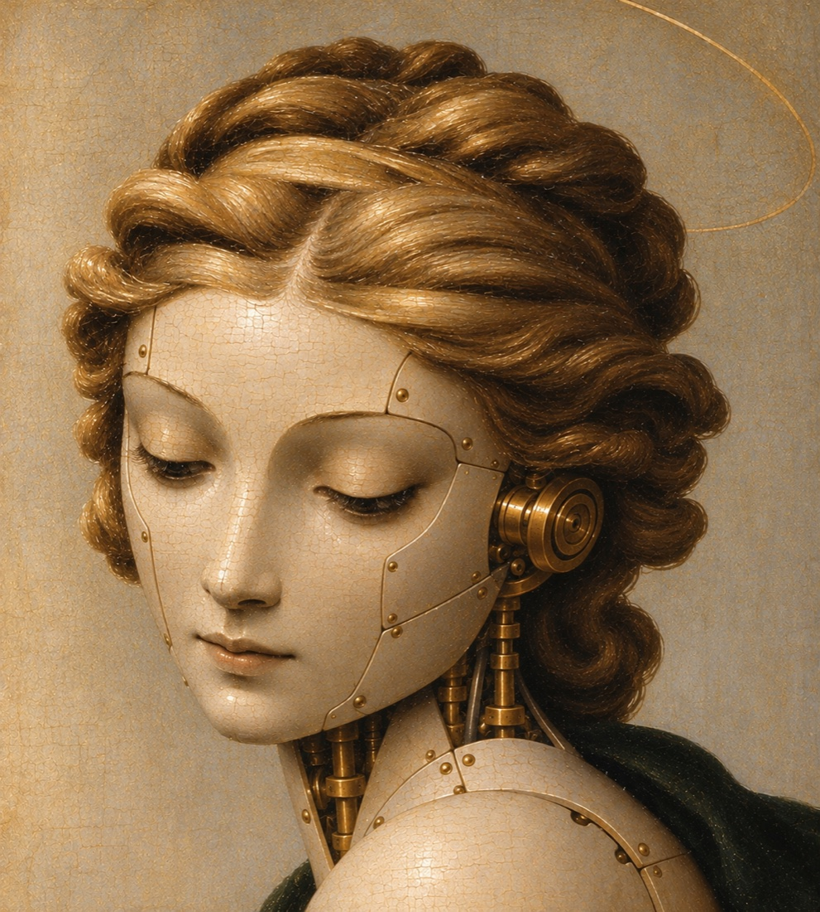
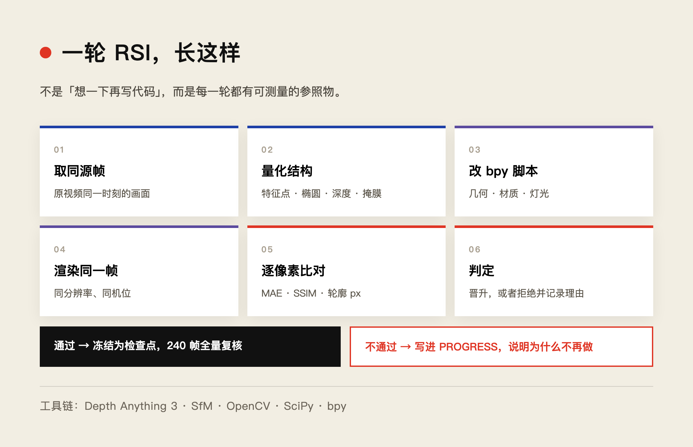
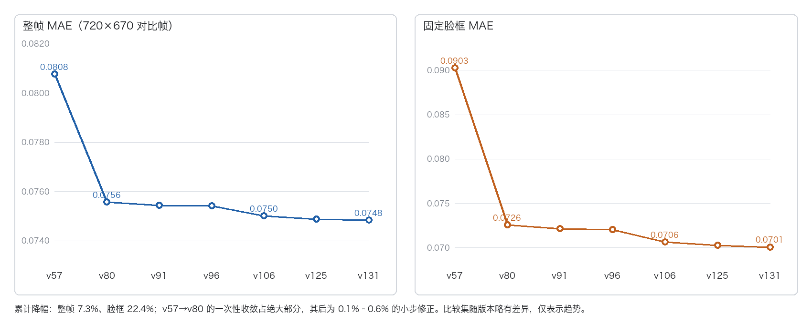
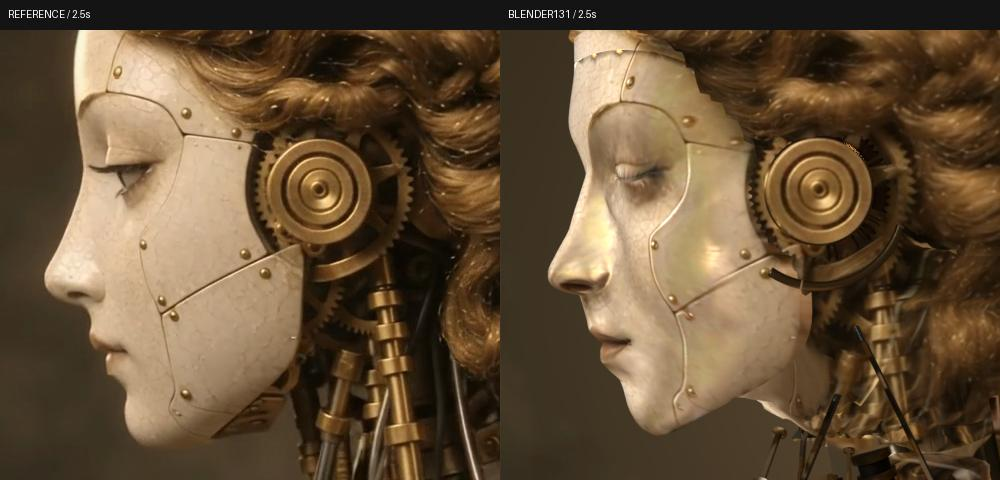
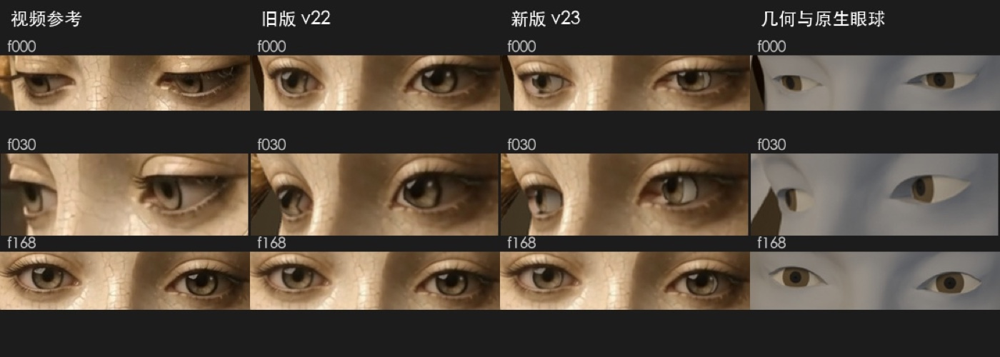

先说结论：它第一次建出来的东西，像用乐高拼的。
134 轮之后，同一个东西变成了一个可以换机位、可以改灯光、可以让人物动起来的三维场景。
这中间发生了什么，是这篇文章要讲的事。

原设计稿
原设计稿。戈德温式瓷面、开片釉、黄铜耳饰与颈部的活塞结构，都是 GPT 画出来的。
▲ ■ ●
一、起点：为什么不满足于「生成一段视频」
最近 Google Carbon 的 Demo 很火：丢一段大西洋海底的视频，它生成一个 Three.js 三维场景。怎么做到的，说法不一——有人说是空间感知，有人说是 Swarm 多智能体流水线。同期 Claude 也能做出很漂亮的动画，但偏卡通，离超写实还有距离。
而我心里一直有个判断：论画面，GPT 是我用过最强的。过去两年它给我出过大量概念图，构图、细节、气质都稳。
所以问题很自然：既然它能画出这么好看的概念图，为什么不能把这些图真的建成三维世界？
按老办法，我会拿概念图去生成视频。画面漂亮、速度快。但你拿到的是视频，不是一个世界——进不去，换不了机位，挪不动一张椅子。
▲ ■ ●
二、裸测：给它几张图，它拼了个乐高
第一次很直接：把参考图丢给它，让它写代码建模。
结果一塌糊涂。几何是粗块面，细节缺失，材质没有层次。跟它自己画的概念图放一起，简直不像同一个模型出来的。
这一步必须先讲清楚，因为它决定了后面所有讨论的前提：GPT 一次性生成三维模型，能力很弱。 任何「GPT 建模很强」的说法，不加条件都是错的。
▲ ■ ●
三、真正起作用的不是提示词，是一套 RSI
我给它搭了一套递归自我改进（Recursive Self-Improvement）的工作环境。

一轮 RSI 的循环
状态写在文件里，不靠记忆。 目标、当前主干 .blend、上一个检查点、completion_proven、下一步要做什么，全在 current_checkpoint.json 里。换会话、隔几天，它仍然知道自己停在哪、上次为什么被否。
工具是真的工具，不是「想一想」。 Depth Anything 3 出深度与相机，SfM 做多视角重建，OpenCV 做光流、掩膜、椭圆拟合，SciPy 做最小二乘与稀疏求解，bpy 直接操纵 Blender 建网格、加约束、改材质、渲图。
这些工具干的是同一件事：把「看起来不对」翻译成可测量的数字。
每一轮都有参照物。 取一张同源参考帧 → 量出结构（478 个特征点、椭圆中心与宽度、深度图、可见性掩膜）→ 改 bpy 脚本 → 渲同一帧 → 逐像素比对（整帧 MAE、固定脸框 MAE、轮廓像素差）→ 写验证 JSON → 判定晋升或拒绝。
拒绝的理由必须写进 PROGRESS.md，因为它决定了后面「不再做什么」。
卡点都是量出来的。 举两个真的：早期相机导出用错了 720 px 的传感器适配，焦距算成 616.75 px，实际是 1096.44 px——差 1.78 倍。在这之前所有「脸型不对」的判断，可能都在修一个本来没错的模型。另一个：第 96 帧耳盖中心，模型给的是 (132.63, 564.55)，实际是 (159.88, 561.08)，差 27.47 px。
这种错误在纯手工流程里几乎无法自查，它不在任何一步上报错。只有当你被迫把两张图叠起来量像素，它才会浮出来。
▲ ■ ●
四、134 轮的战果
从 v1 到 v134，检查点停在 v131。留下 86 个 .blend 快照、276 份验证 JSON、202 个日志。
素材是一段 10 秒、720×1280、24 fps 的环绕视频，共 240 帧。交付物是一个 .blend：11,468 顶点、22,584 三角、28 个形态键、6 组活塞约束、5 个耳部实体、31 张图片全部内嵌。打开停在参考帧，按 F12 直接出图。
累计：整帧 −7.3%，脸框 −22.4%，六个侧脸轮廓均值 5.378 → 5.036 px。

MAE 演进
但真正值得看的是曲线的形状。
收益高度集中。 v57 → v80 这 23 个版本，整帧降 6.4%、脸框降 19.6%；整个项目的累计是整帧 −7.3%、脸框 −22.4%。也就是说，八成以上的进步是在这一小段里完成的，后面五十多个版本只贡献零头。
晋升的只是少数。 131 轮里，真正冻结为检查点的只有 8 个：v47、v57、v80、v91、v96、v106、v125、v131。其余一百多个版本，是对单点假设的验证、参数扫描，或者否决。
被否掉的同样值钱，比如：
- 对数 SH 拟合光照：方向检查通过，实际像素反而变差；
- 相机偏航 −6.06°：第 96 帧中心拉回来了，椭圆宽度却从 56 px 恶化到 65 px；
- 均匀图深度整形：朝向检查通过，画面出现可见高频波纹。
这里面反复出现同一条教训：「指标变好」和「东西变好」不是一回事。
▲ ■ ●
五、怎么证明它是三维模型，而不是一张图
这是我最在意的部分。渲染得像，不等于三维结构成立。

什么才算通过
拓扑。 240 帧共用同一套 22,584 个三角，索引固定。相对上一检查点，面积大于 1e-8 的三角无一翻转；最小法线余弦 0.2819。
身份一致。 28 个形态键不是 28 个模型，而是一套位移作用在同一个 11,468 顶点网格上。位移误差小于 4e-6 世界单位，眼睑与嘴部边界连接误差小于 3e-5。这保证了 240 帧里始终是同一张脸。
装配。 耳部五个闭合实体：零边界边、零非流形边、体积为正；隐藏根轴嵌入头部 3.89 mm；六组活塞在 240 帧上的卡箍接触误差 2.75e-7。
可重开。 31 张图片全部内嵌，换台机器打开不需要外部路径；重开后仍停在参考帧，按 F12 直接出图，不依赖任何 Python 处理器。
可改。 这条是分界线。换机位、改灯光、换姿态之后效果仍然成立，说明背后有一份真的三维数据；视频做不到这件事。

六姿态对照
每组左起：原视频、修改前、修改后。0 / 1.25 / 2.5 / 5 / 7 / 8.25 秒。
但同样要说清这些检查不能证明什么：不等于没有自交，也不等于解剖正确；边界与法向检查只是「没有明显破裂」。
更关键的是，RGB 均值不能当姿态证据。第 96 帧的脸框误差确实比上一版低，可那张图肉眼一看就是错的。平均值变好，可以和一个明显错误共存。

去贴图灰模
把「形状」和「颜色」分开检查，避免被照片纹理误导。
▲ ■ ●
六、还没做好的地方，也摆出来
这是项目自己列的问题清单，不是我的修饰：

侧脸对照
左：原片 2.5 秒；右：Blender 实际渲染。耳盖、发丝与下颌线仍偏硬。
- 侧后姿态：第 96 帧的耳盖与头部角度明显不对，中心差约 27 px；
- 眼部：v22 → v23 修掉了眼睑的形状与注视方向，但眼白反光、角膜高光仍与原片不同；
- 贴图：照片把拍摄光照一起烘进了颜色，正面 SSIM 0.9795，换到第 30 帧掉到 0.5149；
- 局部解剖：鼻唇、下耳弧、肩臂布料的体积仍是粗略近似。
眼睛这一处值得单独看，因为它是少数「一版就见效」的改动：

眼睛 v22 → v23
四列依次是原片、旧版 v22、新版 v23、以及去贴图的几何与原生眼球。三行对应第 0、30、168 帧。
v22 的眼睑太薄，眼球位置偏内，看人时像在斜视；v23 调整了眼睑厚度与眼球轴向后，注视方向对上了，闭眼帧的压痕也自然了。最后一列是把贴图剥掉之后的样子——形状本身对不对，剥掉颜色一眼就能看出来。
所以在 current_checkpoint.json 里，completion_proven 一直是 false。
这个项目做了 134 轮，但它拒绝说「做完了」。
▲ ■ ●
七、所以我的判断要加一个定语
原话说「GPT 才是代码建模之王」，不够严谨，我自己也不满意。
更准确的说法是：
在允许调用工具、反馈信号可测、并且能反复重跑这三个条件同时成立时，GPT 这类模型在代码建模上的上限，明显高于一次性生成的路线。
离开这三个条件，它第一次的产出会输给任何一个会建模的人。
它赢的不是天赋，是耐力。
代码建模与视觉生成的区别也在这里：视觉模型学的是最终像素，代码建模构造的是像素背后的结构——几何、材质、光照、运动规则。前者给你一张以假乱真的画面；后者有机会给你一个能从别的角度看、能动、能被别人接手继续改的东西。
但「有结构」不等于「物理正确」。几何、动画、动力学，仍然要分别验证。
▲ ■ ●
最后
这次实验给我最大的感受，不是 GPT 已经能做出多完美的模型。
而是：当一个模型能够自主调用工具、分解问题、验证结果并持续改进时，它能完成的任务，可能远超我们对「单次生成能力」的判断。
以前让 AI 画一张图，后来让 AI 生成一段视频，现在是让 AI 构造一个可以运动、可以编辑、可以交互的世界。
从生成画面，到生成运动，再到生成世界。
134 个版本证明的其实只有一件事：一个最初连模型都捏不好的模型，只要每一轮都能看见自己的错误、并且有能力改，它就能走到相当远的地方。
所以结论保留，但要加限定：
在可测量、可重跑的条件下，GPT 是代码建模最强的那个——不是因为它第一次做得最好，而是因为它是唯一愿意改一百三十四次的。
数据来自该项目的迭代日志：86 个 .blend 快照、276 份验证 JSON、202 个运行日志。所有指标为同源图像相似度或像素差，非几何真值；拓扑与法向检查不构成自交或解剖学证明。